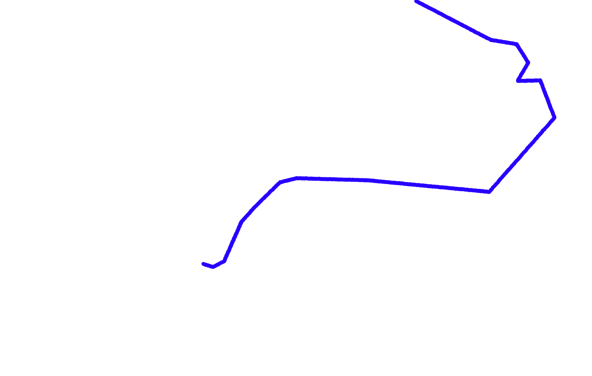

Autobusni sustav
Odaberi liniju
Odaberi liniju

Odaberi autobusnu liniju
1 STARINE - HNK - STARINE
2 ZRAČNA LUKA - STRINJE - POLJIČKA - SUKOIŠAN KOL.
3 LOVRINAC - BRDA - LOVRINAC
5 DRAČEVAC - POLJIČKA - HNK - DRAČEVAC
5A DRAČEVAC - SOLIN CENTAR - POLJIČKA - HNK - DRAČEVAC
6 KILA - VUKOVARSKA - HNK - KILA
7 ŽNJAN - SPINUT - ZVONČAC - SPINUT - ŽNJAN
8 ŽNJAN - ZVONČAC - SV. FRANE - ŽNJAN
9 RAVNE NJIVE - TRAJEKTNA LUKA - RAVNE NJIVE
10 JAPIRKO - BILICE - TRAJEKTNA LUKA - BILICE - JAPIRKO
11 RAVNE NJIVE - PUJANKE - SPINUT - PUJANKE - RAVNE NJIVE
12 SV. FRANE - BENE - (MEJE) - SV. FRANE
14 BRDA - DUBROVAČKA - POLJIČKA - ŽNJAN - DUILOVO
15 DUILOVO - TRAJEKTNA LUKA - DUILOVO
16 NINČEVIĆI - HNK - NINČEVIĆI
17 SPINUT - LORA - TRSTENIK - LORA - SPINUT
18 BRNIK - MEJAŠI - MAT. HRVATSKE - HNK - MEJAŠI - BRNIK
21 SV. FRANE - MEJE - SV. FRANE
22 KLIS MEGDAN - GORNJA RUPOTINA - HNK - KLIS MEGDAN
Vozni red
Odaberite liniju da biste vidjeli vozni red.